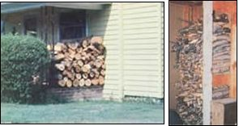
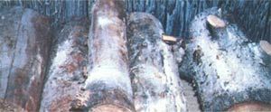

Where's Your Wood?
By Kathy Hurley
November/December 1980
Don't let wood-borers devour your fuel supply. . . or your floorboard!
Once you'd decided to put a rein on your ever-increasing utility bill by heating with wood, chances are that - while the cool autumn breezes were chasing away the sweltering dog days of summer - you spent many a chilly Saturday morning felling, bucking, hauling, and splitting your winter's BTU supply. But now, before you allow yourself to settle back and relax in front of that new woodburner, take a moment to evaluate just where you've stored your hard-earned fuel.
Like most folks (we all want to minimize the number of steps required to get from the woodpile to the stove), my family began its "renewable fuel" career by stacking the logs next to the house . . . in the garage ... in the basement ... and - of course - right in the kitchen. In fact, we used all four easily accessible areas as storage sites for several years . . . until we discovered - one spring - that the small kindling we had so efficiently moved into the basement in early fall was alive with wood-boring insects. Further inspection revealed that the logs stacked neatly against the garage wall, the cords lining the back of the house, and the timbers toasting in the kitchen were all harboring hordes of hungry hexapods!
DOIN' WHAT COMES NATURALLY
After our sad discovery - and the subsequent (costly) process of exterminating our uninvited house guests - we learned that the insect infestation (which we had assumed was a freak occurrence) was actually a predictable, natural phenomenon!
During the warm summer months, you see, the pesky critters forage for edibles in dead or dying timber. Therefore, a recently felled tree serves as an ideal nesting site . . . and last season's uncovered woodpile is an open invitation for the six legged squatters to settle down. Then in the fall - about the time jack-o'-lanterns leer at passers-by - the insects slow their activity . . . and eventually enter a dormant stage for the winter.
However, if the natural hibernation period is disrupted, you may well find the voracious vermin feasting on your firewood. When fuel is stored indoors or - by being stacked against the house - absorbs radiant heat from nearby siding, the warmer temperatures trigger a resumption of the bugs' foraging festivities. And - more likely than not - the insects' closest lunch will "just happen to be your dwelling's floor joists!
THE ANTS COME MUNCHING . . .
Of the various species of wood-boring arthropods, the carpenter ant poses perhaps the greatest threat to household timbers. The damage caused by this half-inch long black insect is often confused with that done by the termite . . . particularly in a colder regions of the country where the latter critter is less common.
However, upon close inspection you'll a see that the activities of the two species are quite different. Carpenter ants don't eat the wood (as termites do), but instead merely excavate galleries in which to store the queen's eggs. The tunnels - which are often detected when the log is split open - are made across the wood grain and look similar to bores made by a round-nosed gouge. Eventually, the burrowing weakens the wood to such an extent that the structure collapses.
Since carpenter ants must have moisture to live, they nest only in damp timber. Therefore, wet, unsheltered woodpiles often provide prime spots for the gnawing nuisances to set up housekeeping. The intruders may even expand into dry wood provided there's an adequate supply of water nearby.
(A series of piles of coarse sawdust - similar to those produced by a power saw - are sure signs of carpenter ant habitation. Such "leavings" simply fall from the excavations and collect on the surface below.)
TERMITE TORMENT
If you live in a southern state, termites will tend to be the main critters tasting your timber. The pale members of the Isoptera order can cause irreversible damage if not discovered - and eradicated - early after infestation.
The dry-wood (or powder post) termite is often brought into the house in firewood . . . and can be the bane of all but the most conscientious homesteader. Members of this species are able to absorb enough water from the air and the decomposition of their food to live without an additional source of moisture . . . and therefore attack even dry, seasoned fuel. Like the carpenter ant, this pest excavates across the wood grain. Piles of shed wings and sandlike pellets of partially digested wood are clues that drywood termites are trespassing nearby.
The subterranean termite, on the other hand, cannot exist in dry wood . .. it requires damp warm soil. Therefore, a stack of fuel piled against the house, resting on moist ground, provides an ideal nesting site for the pests. The termites may also commute - through earthen tubes - to the inside of a structure and excavate the dry wood of the support beams, returning at night to the moist soil. The galleries of this underground tunneler are cut parallel to the grain of the wood, and if you split the infested firewood, you'll find the channels covered with grayish-brown pellets of excrement.
THE POWDER POST PESTILENCE
While less well known than either the carpenter ant or the termite, the powder post beetle can also bring havoc to your household. Since this wood-borer prefers to attack hardwoods, it can damage oaken beams and furniture as well as your valuable stacked cords! The insects' small white larvae tunnel through wood, creating the pin-sized wormholes often seen in antique furniture. A dry, flourlike dust - that accumulates as the critters exit from the nest - is usually the first evidence of the powder post beetle's presence.
Obviously, the trick to beating woodboring bugs is to stop them before they camp out in your construction. Of course, if you're absolutely set on storing the winter's fuel supply inside, there are some commercial products (they can be purchased from many fertilizer dealers or nurseries) that will kill insects lurking in the firewood. If such chemicals are to be effective, however, each billet must be completely sprayed .. . and remember, we're talking about cords of wood! So - even if the environmental cost of using a pesticide doesn't concern you - the cash expense involved, and the mere logistics of treating every slab of firewood, could be staggering!
WHAT WE DID
Our household's insect attacks led us to conclude that the simplest and most labor- and cost-efficient way to keep the woodborers at bay is to store fuel away from the timbers of any building. We stack our wood a reasonable distance (25 feet) from the house, occasionally spot-check the pile for sawdust accumulations, and bring in only a half-day's supply at any one time.
Of course, just throwing the billets out back, even though it'll help protect your house, won't deter insects from settling in your firewood. Damp, decomposing lumber provides a perfect breeding ground for wood-boring critters (not to mention the fact that you'll decrease your stove's efficiency by burning wet or rotten timber). So, if you want to squeeze the maximum amount of heat from those precious logs and prevent pests from joining you by the fireside, building a proper woodpile is just as important as keeping the wood out of your basement.
Perhaps the most critical storage consideration is providing a cover to keep the wood dry. Such protection is a matter of convenience as well, because - if you don't shelter your fuel supply - once the freezing rains and snow arrive, you'll find yourself outside in a snowstorm one evening, chipping at the frozen logs with a sledge hammer and a chisel. And even if you are fortunate enough to pry a piece of the solid mass loose, you'll soon have a messy pool of melted ice in front of the fireplace.
We found that the best way to cover our wood was to construct a conventional shed. At first we considered draping a sheet of polyethylene plastic over the pile, but such material gets brittle in cold weather, breaking or cracking in a single season's time (and then it becomes just one more piece of nonbiodegradable trash that will end up - eventually - in the landfill). So in the long run, a permanent shelter seemed like the best alternative.
Our shed is a simple post-and-beam structure with a roof, slatted sides, and a concrete block base. The roof repels the rain, and the cement blocks serve to keep the logs off the moist ground, preventing rot and discouraging subterranean termites or carpenter ants from tunneling into the timber. Furthermore, since we left space between the individual blocks, air circulates around the bottom layer of the woodpile as well as above the stack. And we chose slats for the walls because they allow adequate ventilation, yet also support the tiers of wood.
So - by spending just a few more of your Saturday mornings working in the crisp late-autumn air - you, too, can put up a pest-proof structure ... and then settle back to bask by the fire, confident that those cords of fuel out back are free from gnawing intruders, and that your homestead's timbers will remain intact!
|
 (PHOTOS BY THE AUTHOR) Fuel stored against the house. . . or kindling toasting in the kitchen ? though convenient to your woodstove or fireplace ? may well be harboring a horde of hungry hexapods . . . |
 (CARPENTER ANT AND TERMITE PHOTOS BY THE USDA) (FROM LEFT) a carpenter ant . . . or termites . . . The intricate tunnelings in this split-open log demostrate the origin of the name ""carpenter ant"", and a sure sign that intruders have been working in your wood. The insect can weaken a building to the point where it will collapse. |
 Timber with talcum-covered appearance is the first visible sign that the powder post beetle is feasting on your firewood. |